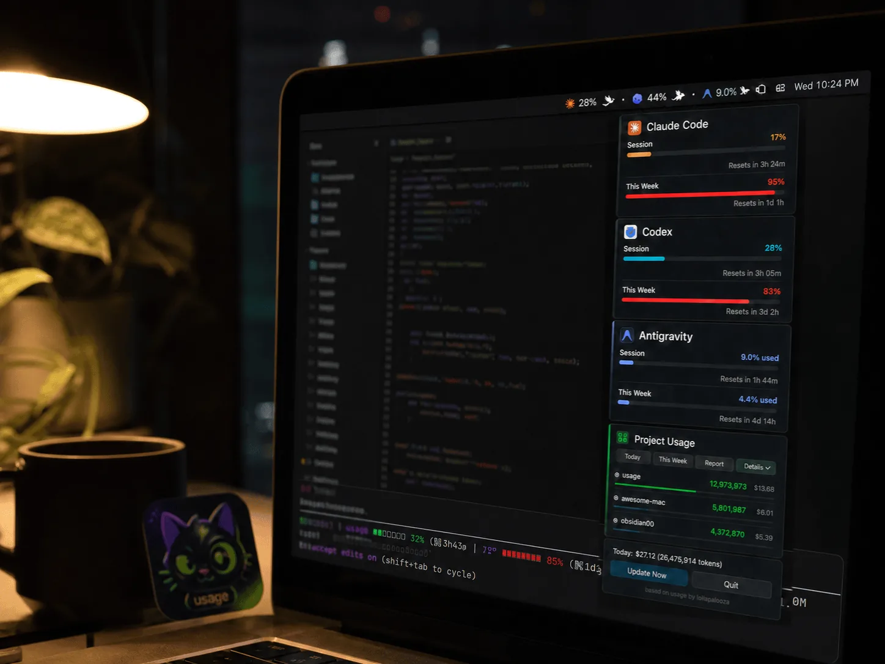
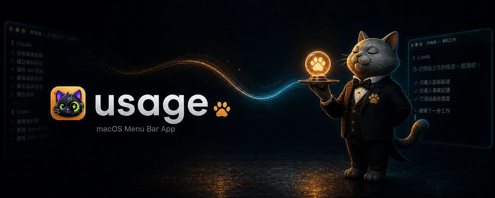
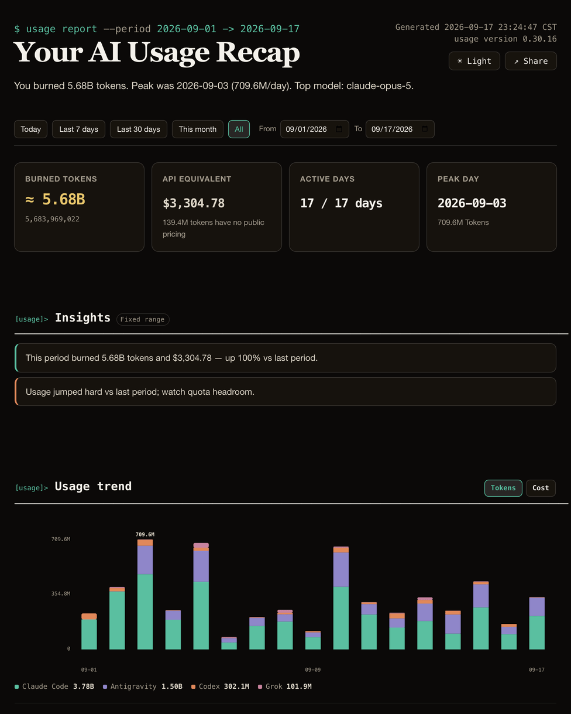

Pin your Claude Code, Codex & Antigravity
quota to the menu bar.
A tiny menu bar app for macOS — and system tray app for Windows — that shows how much of your AI quota is left, like a battery percentage for tokens. No LLM API calls, so watching your quota never costs you tokens.

Built for developers who burn tokens.
Stop guessing if you're about to hit the rate limit mid-refactor.
5-hour & 7-day quota at a glance
Both Claude Code session (5h) and weekly (7d) percentages live in the menu bar. Click for a full popover with per-project usage and cost.
Claude Code, Codex & Antigravity, one app
Track Anthropic, OpenAI, and Google quota side by side. Codex is auto-detected from ~/.codex/sessions/ with no setup; Antigravity uses the sign-in its own CLI already stores.
Grok CLI, too
A fourth card reads Grok CLI's weekly credit percentage straight from its own local debug log — no network call. Its per-request token usage still counts toward today's cost and project totals, just like Claude Code and Codex.
Local-first by design
Claude Code and Codex numbers come from files already on your disk — a statusLine hook status file plus Codex session JSONL logs — with no network access at all. Antigravity quota is fetched from Google using the credential its own CLI stores. Every outbound request is listed in SECURITY.md.
One-click HTML reports
Today, week, month, or all-time — get a shareable HTML report with token / cost trends, top projects, and model breakdown. Project names hide by default for client-safe sharing.
14 visual panel themes
Matrix digital rain, Windows 95, retro newspaper, midnight aquarium, World Cup FIFA HUD, Lepidoptera blueprint — pick a mood for your menu bar pop-out.
AI Talent Market
Install a curated team of Claude Code subagent personas — a one-person law practice, a solo software studio, and more — straight into ~/.claude/agents/, then call one by name in your next conversation.
Terse Mode
A menu-bar toggle that asks Claude Code — and Codex CLI too, if it's installed — to answer more tersely for the whole session: same substance, fewer words, while code, commands, and error messages stay byte-exact.
Notifications before you hit the wall
When your context window hits 70%, the status line nudges you to /clear or /compact to prevent token waste. You can also opt-in to system notifications for quota limits and recoveries. The status line also shows your prompt cache hit rate with a countdown to expiry, so you can tell whether finishing now still reuses the cached context.
AI Council
Run a multi-round discussion between Claude Code, Codex, and Antigravity on one topic. Pick who joins, which model each one uses, and how many rounds — with a token estimate shown before you start.
Now your CLI picks up where you left off
The web and desktop apps keep your history automatically — close them, reopen, it's all there. The CLI keeps it too, but you need to know the command to pull it back up. Resume makes that automatic: open a new session and it picks up where you left off, no command to remember, no re-explaining. It now also runs a daily health check on your logs — when it spots token waste, the handoff adds a one-line heads-up; say "show me" for the findings and fixes. Reads local files only — never connects to any API.

Install in 10 seconds.
Four ways to get it running. All free, all AGPL-3.0.
Homebrew
One command. brew upgrade keeps it current.
brew install --cask aqua5230/usage/usageDownload .app
Latest usage.app.zip from GitHub Releases — unzip, drag to /Applications.
System tray
Latest usage-windows.zip from GitHub Releases — unzip and run usage.exe.
uvx (no install)
Terminal interface only — no menu bar or tray. Works on Linux too; uv brings its own Python.
uvx usage-cliPick a panel that fits your mood.
Fourteen built-in themes. Change anytime from the popover toolbar.
Your AI usage, in one shareable page.
Generate an HTML report with token spend, cost, top projects, and model distribution — plus a year-in-review page with a GitHub-style contribution heatmap and a "Wrapped" card. Send to your manager. Use as a client invoice attachment. Project names hide by default.
